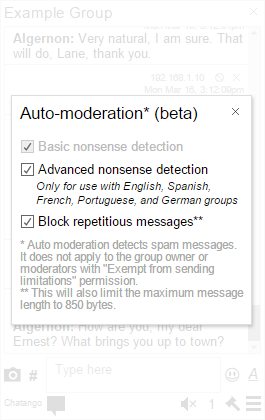

Help: group chat owner
Embed options
The group configurator allows you to choose between three layouts: Box and two small footprint layouts: Ticker and Tab.Each layout requires a permanent Group name, that cannot be changed.
The Chatango URL at the top of the group can be disabled by unchecking "Show URL" checkbox in the configurator.
In the Box view, click on "More color controls" to fully customize the group. The Ticker and Tab views have an expanded Box view, that can be customized when they are clicked in the configurator.
If you want a plain layout, uncheck "User images" and uncheck "Allow user's message styles".
Prepare a group for large events
If you are planning to place a group on a site with high traffic, we recommend the following settings:Configure banned content
Add banned words, and set "Send censored messages" to "Only to author". Consider banning links and images.Disallow anonymous messages
If someone wants to contribute meaningfully, then they will sign in. Set the chat restrictions to "No anons."Switch on slow mode
Have users think before they send, set a restriction on how often they can send a message.Make moderators
Designate moderators to permanently ban destructive participants.Turn off private messaging
When you generate your group code, you can turn off private messaging by unchecking "Private messaging" checkbox in the group configurator.Ban words, links and other content
Group owners and administrators can ban certain words from a chat. To set the banned words you must be logged in to the HTML 5 version of the chat as the group owner and click the Main menuAbout banned words
Words in the "word parts" box censors words even when they are a part of a longer word. Exact words box will censor a word only when it is surrounded by spaces. Click on "Example ban words" to pre-populate the boxes.
Banned words are resilient to many misspellings. E.g. if the word "naughty" is on the list, then the message: "nAughty nauggghty nau9hty n.aught.y" will be shown as ****
Control who sees censored messages
If you set "Send censored messages" to Only to author, the sender of censored message will be unaware that their messages are not delivered to other users. This is the most secure option.
Ban rich content
Use the checkboxes to ban links, videos, and images.
Chat restrictions
To mitigate spam and trolling, in addition to making moderators and/or turning on auto-moderation you can set who and how frequently can message in your chat:Optional anonymity: control whether anonymous messages are allowed
Log in to your group as the owner. Click the Main menu
Broadcast mode
Only the owner and designated moderators can post. Use this mode for interviews, live blogging etc. Log in to your group as the owner. Click the Main menuClosed without moderators
If there are no moderators in the group, no one can post. Log in to your group as the owner. Click the Main menuSlow mode
Restrict users to one post per 30 seconds, or an interval that you set. This does not apply to the owner, and moderators can be exempted from this limitation. Log in to your group as the owner. Click the Main menuBan proxies and VPNs
Prevents messaging from a proxy or VPN service. Log in to your group as the owner. Click the Main menuModeration controls
As a group owner, you can delete messages by clicking on the delete button , and block people by clicking on the ban user button . If you do not see these buttons, click on "Set your name" link at the bottom of your group and log in as the owner. You can also grant this permission to your group administrators.
, and block people by clicking on the ban user button . If you do not see these buttons, click on "Set your name" link at the bottom of your group and log in as the owner. You can also grant this permission to your group administrators.
Ban user button
Ban a user from chatting in your group - you can unban them using:
Moderation menu Unban users
Delete button
Delete this message, or all messages by this user.
Logged in
You must be logged in as the owner or a moderator to see these features.
Add Moderators
Moderators can ban users and delete messages, and perform other group administrative tasks, depending on their permission levels. We suggest that you make enough moderators so that there's always a moderator in a chat over 300 people. To make new moderators you must be logged in as the owner or administrator and click Moderation menu Add/remove moderators.

Edit Moderators
You can grant individual permissions to each moderator. There are two permission groups: moderator-level and admin-level. For example, you can grant an admin-level permission to a moderator to make other moderators, or you can grant a moderator-level permission to turn auto-moderation off and on to a moderator. To do so, click on Edit Moderator link next to the moderator name
Auto moderation (beta)
Auto-moderation uses machine text analysis to detect and reject repetitious or nonsense messages. It should work with all languages, including character based. You can access this menu as the owner or a moderator by clicking Moderation menu Auto-moderation.
Chatango Mobile and App
Embedded Chatango groups work on Android and iOS. Please click the Mobile View tab in the group configurator to see the mobile version. You can moderate and update your group using the Chatango App, currently available from the Google Play store for Android 4.4+.Periodic Auto Announcements
Send a set message in the chat at a specified interval. Log in to your group as the owner. Click the Main menuEasy ban
If you are moderating a fast group the easy ban mode allows you to ban a user and delete all their messages with one click. To turn on easy ban you must be the owner or a moderator, click Moderation menu Turn On Easyban.
You can also use easy ban moderation on your phone by swiping across a message:
Group title and sticky live message
Change the title and owner's message
Log in to your group as the owner. Click the Main menuParticipants list
See which participants are currently online
Click the counter displaying the number of participants in the footer of the group.Hide the counter and the participants list
Log in to your group as the owner. Click the Main menuHTTPS support and security
When a Chatango group is embedded into an HTTPS page, it automatically switches to SSL protocol, so that all communications between the browser and Chatango are encrypted. To protect the embedding web sites, Chatango app runs in a separate iframe that has a different domain from the embedding site. To sanitize user generated content, Chatango client does not render HTML in the user messages: Chatango uses its own protocol, and if the client receives normal HTML tags, they are discarded..HTML5 support
When you generate new code for a Chatango group, HTML5 version is recommended for most applications. Use the HTML5 radio button when choosing the code version. Flash version is currently maintained for legacy browsers (IE8 and 9). To see the HTML5 version of a group full size on desktop, add /?js to the URL of the group.E.g. https://examplegroup.chatango.com/?js.